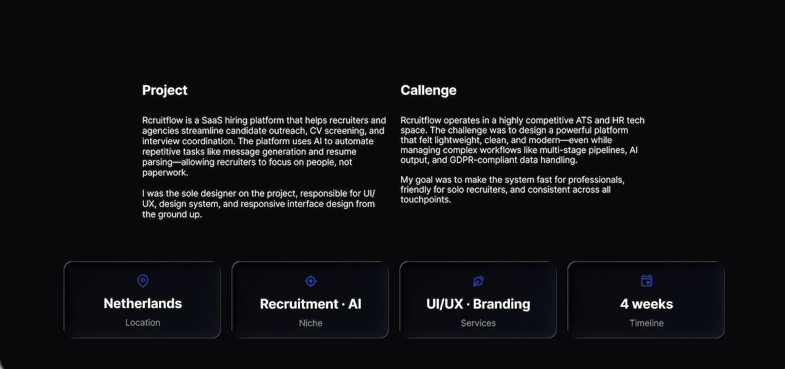
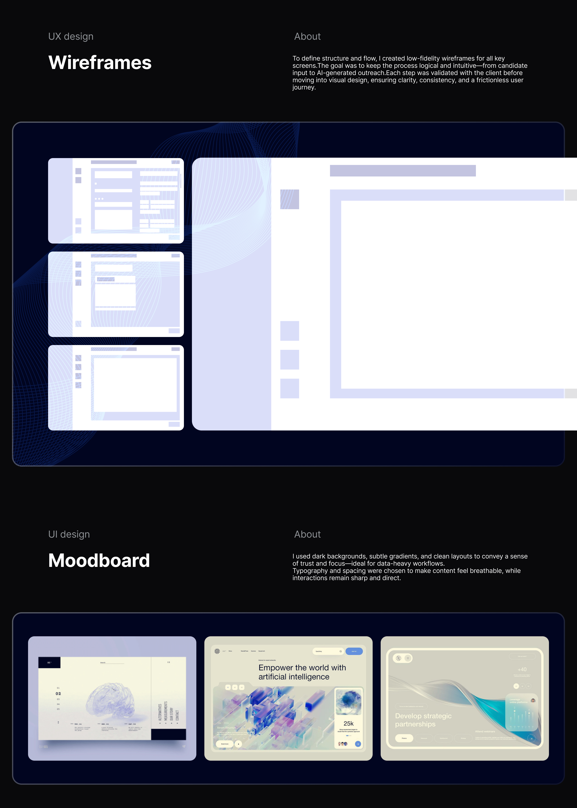
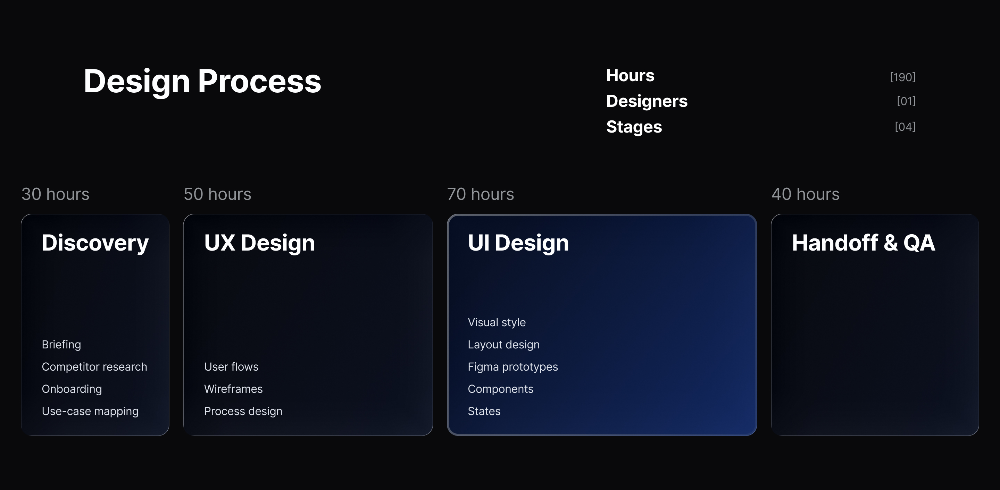
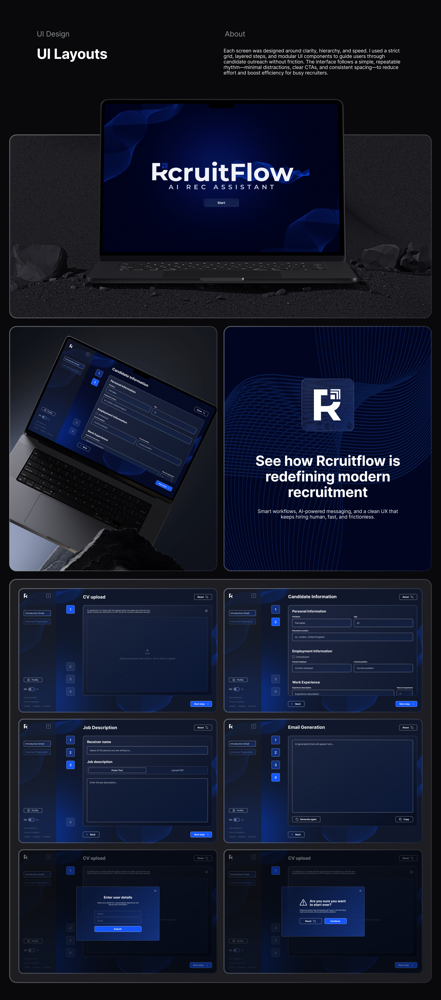
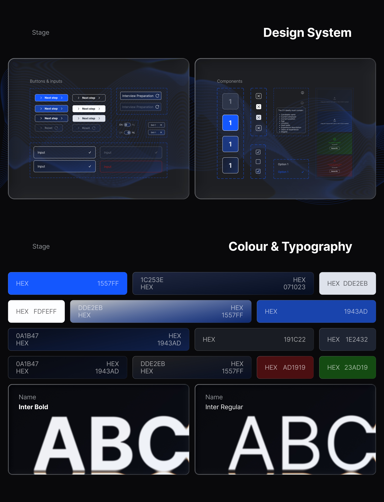

Recruiters were drowning in busywork, not hiring.
A recruiter's day disappears into repetitive tasks - reading CVs, copy-pasting details, writing job descriptions, drafting outreach one by one. The judgement work, talking to people, gets whatever's left.
Existing tools didn't help: the established ones felt bloated to solo recruiters and small agencies, the lighter ones had no automation, and bolted-on AI was opaque. RcruitFlow's bet - automate the repetitive 80%, keep the recruiter in control, stay calm enough to live in all day.

Owned end to end - research to handoff.
I owned the full process - competitor research, flows, UI, branding and the design system - working directly with the two founders and coordinating handoff with the engineering team.
Three insights drove every decision.
I ran sessions with the founders to pin down the real roles - solo recruiter, agency, in-house HR - then audited the tools they lived in: Lever, Workable and Recruitee. The gaps were obvious.
Time, not features
Recruiters want hours back. Any control that doesn't save time is friction - fewer steps, not more features.
Trust, but verify
People won't send what they can't see. AI drafts and suggests; the recruiter edits and approves.
Calm beats clever
An all-day tool. A dark, low-noise UI cuts fatigue - clarity and trust over flair.

Three rules for the interface.
One job per screen
Each step does one thing - upload, review, write, send. A numbered rail keeps progress visible.
AI assists, recruiter decides
Generated content lands in an editable field, never auto-sent. Regenerate, tweak, copy - the human acts last.
Every state designed
Empty, loading, success, error, uploaded, failed - in EN / NL. The edges are where trust is won.
Upload → understand → compose → send.
Rather than one crowded dashboard, I shaped the product to the natural arc of an outreach task - a guided, step-by-step flow. The recruiter moves one decision at a time, with a persistent 1–4 rail and profile + language switch always in reach. One focused screen per stage is what makes a multi-stage pipeline feel light.

The flows I refined most.
CV upload
One drag-and-drop target with format guidance and explicit uploaded / failed states.
Candidate info
Grouped personal, employment and experience fields with inline validation - structured but scannable.
Job description
Paste text or upload a PDF; the assistant structures it, the recruiter edits.
Email generation
AI-drafted outreach in an editable canvas - regenerate and copy, never auto-send.


Modern, trustworthy, quietly technical.
Modern and trustworthy with subtle tech cues - the AI focus without sci-fi clichés. Clean type, soft gradients, a minimal layout system.
- Dark navy base with a vibrant royal-blue accent.
- Inter - bold for headers, regular for content.
- Soft line patterns and subtle gradients for depth.
- Minimal stroke iconography for actions, statuses and states.


Built for scale & compliance.
Tokenised, state-complete and tuned for a data-heavy, regulated product a multi-engineer team would build on.
- Reusable button, input and component patterns with full interaction states.
- Status colour used sparingly - success, error, uploaded, failed.
- Bilingual EN / NL throughout.
- GDPR-compliant data handling reflected in the UI and copy.

RcruitFlow shipped developer-ready: a scalable, tokenised system, assistive (not overwhelming) AI, and a polished dark UI unlike typical HR-tech tools - simple, smart and frictionless.
Designing trust into AI is a UX problem.
The hard part wasn't visuals - it was how much the AI should do for the recruiter. More autonomy made it simpler but scarier; more control, busier but calmer. Settling on "AI drafts, recruiter approves" as a hard rule resolved dozens of downstream decisions - a clear principle early beats any single screen.